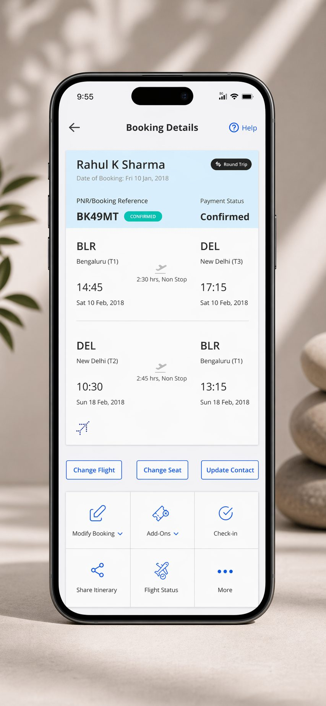
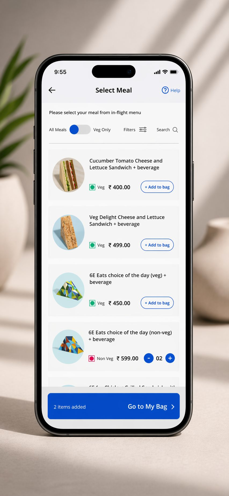

A WINDOW NOBODY HAD DESIGNED.
Between booking confirmation and departure, a passenger's relationship with their airline is largely a void. The ticket is bought. The flight is weeks away. And yet this window — days or sometimes months long — is exactly when people plan, anticipate, and are most open to shaping their experience.
IndiGo was leaving it entirely undesigned. Add-on adoption was low. Revenue was being left behind.
The Brief
"Redesign the add-on features to make them more discoverable and easier to purchase."
That framing pointed at the right problem. But it had the wrong diagnosis — and changing that diagnosis changed everything that followed.
NOT CONVERSION. DISCOVERY AND TIMING.
The instinct was to treat this as a purchase friction problem. Cleaner UI. Better CTAs. Fewer steps to checkout.
An hour observing users revealed something different. Users weren't abandoning the add-on flow because checkout was hard. Most of them were never entering it at all.
Two failures were running simultaneously. Add-ons were invisible: users didn't know what categories existed. And they were mistimed: surfacing add-ons during booking — when users are managing flight selection, traveller details, and payment — was competing with maximum cognitive load. Users were in "complete the transaction" mode, not "plan my experience" mode.
THE REVENUE OPPORTUNITY DOESN'T LIVE AT CHECKOUT. IT LIVES IN THE POST-BOOKING WINDOW — AND THE PRODUCT HAD NO WAY TO CAPTURE IT.
THREE DECISIONS. ONE ARCHITECTURAL SHIFT.
Decision 01
Add-ons Don't Belong in the Booking Flow
Designing add-ons as a checkout upsell is fighting the user's mental state. Post-confirmation is working with it.
A confirmed passenger has shifted from decision-making mode to anticipation mode. They're thinking about the trip, not protecting themselves from a transaction going wrong. That's the window. It lasts weeks. The booking flow lasts minutes.
We moved the primary add-on entry point to the booking details view — persistent, first-class, reachable at any time between purchase and departure. Add-Ons as a tab alongside Modify Booking, Check-in, Flight Status.
The business model observation: the post-booking window is an extended revenue opportunity, not a single moment. A checkout upsell gets one shot. Post-booking access gets every visit between purchase and departure.
Screen — Booking Details

The Add-Ons tab lives here — first-class, persistent, always accessible from any confirmed booking.
Decision 02
Categories Before Items — Show the Full Menu First
When users don't enter a feature area, the first hypothesis is discoverability failure. You can't reduce friction for a journey the user never started.
The prior design buried add-ons. Users encountered a flat, undifferentiated list. Services as different as meal pre-booking, priority boarding, and sports equipment handling were presented without category structure — forcing users to read everything to understand what was available.
The redesigned Add-Ons landing page is categories first: Excess Baggage, 6E Eats, Fast Forward, Travel Assistance, Sports Equipment — each with description and savings badge. The savings badges are not decoration. They're the motivation to act now rather than at the airport, visible at the decision point.
Screen — Add-Ons Landing

Categories first — users see the complete picture before committing to explore any single service.
Decision 03
Dietary Preference is a Gate, Not a Filter
A task-focused designer adds a filter. A user-focused designer makes it the first step.
Meals were the most-used add-on category (28% of add-on users) and the most friction-heavy to navigate. Users were repeatedly selecting and deselecting items — a behavioural signal that they were evaluating something the interface wasn't surfacing.
The root cause: dietary preference isn't a preference in the usual UX sense. It's a constraint that eliminates most available options. We made it the first interaction: a binary toggle — All Meals / Veg Only. One action takes you from a long mixed list to a short, directly relevant one. We also added full nutritional and allergen information — users weren't indecisive, they were uninformed.
Screen — Select Meal

The toggle is the first interaction — one action eliminates all irrelevant options. Persistent cart bar enables cross-category add-on building without a forced checkout moment.
What We Chose Not to Build
Push notifications and email upsells. The post-booking window only works as a design surface if users come to it on their own terms. The moment it becomes a notification channel, the relationship shifts from "this helps me plan" to "this is selling to me." That shift is immediate — and once it happens, the user's guard goes up for every subsequent interaction.
THE WINDOW AS A DESIGNED STATE.
Journey state — cognitive mode at each stage
Before
After
Cognitive state during booking: transaction anxiety. Post-booking window: anticipation and planning. These require different product surfaces.
WHAT USABILITY TESTING SHOWED.
↑
Task success rate for add-on selection improved across all usability test participants.
✓
Category landing consistently resolved the "I didn't know this existed" problem — users discovered options they hadn't known were available.
↓
The dietary toggle in meal selection eliminated the back-and-forth selection behaviour observed in the prior interface.
✦
Post-launch measurement was outside this engagement's scope. The architecture was built for the metric that would have mattered: whether a passenger, weeks after booking, thinks to open the app and plan their trip.
THE DROP-OFF IS UPSTREAM OF EVERYTHING.
The instinct in conversion-focused product work is to look at where users drop off and fix the friction at that point. This project forced a different question: what if the drop-off isn't in the flow at all — what if it's before the flow begins?
When users never enter the flow, the design problem is upstream. The flow itself might be fine. The architecture that delivers users to it is what's broken.
THE POST-BOOKING WINDOW AS A DESIGNED STATE IS APPLICABLE TO ANY PRODUCT WHERE A TRANSACTION CREATES A RELATIONSHIP THAT CONTINUES BEYOND THE CHECKOUT.